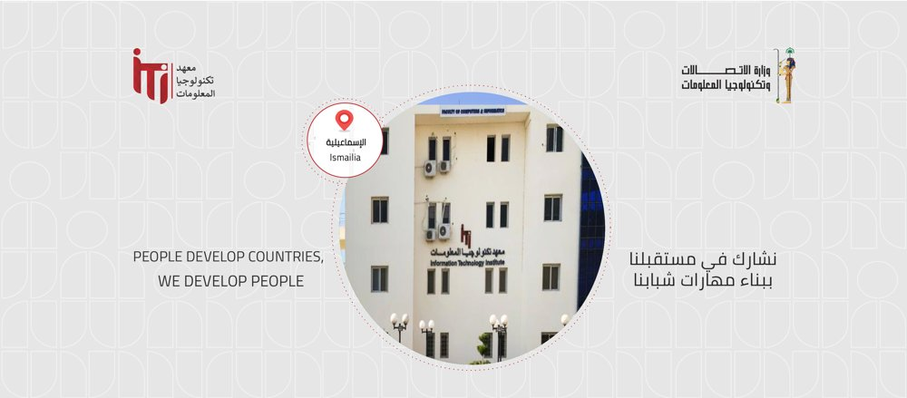

About ITIThe institute, the branch and the track behind this project |
|
Information Technology Institute (ITI)
|
The Information Technology Institute (ITI) is an Egyptian institute under the Ministry of Communications and Information Technology, dedicated to building the digital skills of young people through intensive, hands-on training programs.
Its motto says it best: "People develop countries, we develop people." ITI branches across Egypt prepare graduates to take part in the future of the country's technology industry.
Our branch is ITI Ismailia - Suez Canal Branch, and our program is the Cloud Architecture track. The CCNA module gives us the networking foundations every cloud architect needs before building on top of virtualization, cloud platforms and automation.
|
 ITI Ismailia branch
 |
Why CCNA in a Cloud Architecture Track? Foundation of the CloudEvery cloud service ultimately runs on routed, segmented and secured networks. CCNA skills let us reason about how traffic really flows. | Real Design PracticeThe capstone forces the full cycle - requirements, addressing plan, configuration, testing and documentation. | TeamworkThree engineers sharing one design: agreeing on an IP plan, naming conventions and a verification checklist. |
|
|